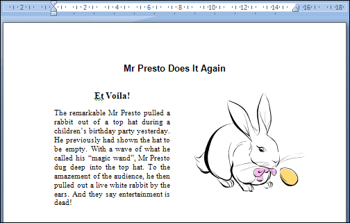

Free
computer Tutorials
|
Free
computer Tutorials
|
|
 home home |
|
|||||
Microsoft Word 2007 to 2010Section Four: 1 2
Clip ArtClip art is a picture or graphic that can be inserted into a word processed document. Clip art comes in a wide variety of formats and styles, from a simple cartoon to a photographic image. Microsoft Word comes with its own clip art collection that you can use. We'll see how to do that in this section of the course. When you have finished, you will have produced the document below:  OK, create a new blank document and let's get started.
Inserting Clip ArtThere is a document that goes with this section called ClipArtStory.docx and can be downloaded by clicking below. It is one of a few documents you need for this course, and all the other files are included in the download as well. However, it is a zip file. If you're not sure how to open zip files then you also need to read the short tutorial below. Get All The Extra Files Needed For This Course Once you've saved the file above, open up the document called ClipArtStory.docx in Microsoft Word and we'll make a start. To insert a piece of Clip Art, do the following:
When you click on the Clip Art item, you should see a new area appear to the right of Microsoft Word: To see all the clip art click inside of the Search For box at the top. With your cursor flashing inside of the textbox, click the GO button. The big white area will then look something like this: Use the scroll bars on the right hand side to see more clip art. You can also narrow down the search by clicking the arrow on the Search In list. You'll then see this in Word 2007: In Word 2010, you'll see this: Select the Illustrations item. For Word 2007 users, click the small plus symbol next to Office Collections to see a list of categories: Click a checkbox to add or remove that category from your search. In the image below we've unchecked all categories except for animals: Once you've narrowed down your search, click the GO button at the top. You'll then see only the clip art for your chosen categories: We rather like the rabbit image, so we'll use that one. But feel free to select a different one. Word 2010 users will have to scroll down a bit on the Illustrations list before coming across the rabbit. You can use a different graphic, though, if you can't find it. Once you've located an image, move your mouse over it to see a dropdown option appear: Click the arrow to see the following menu: Click the Insert option on the menu and your chosen clip art will appear in your document. It will appear at the point where your cursor is on your page. But your article should now look something like ours below:
In the next lesson, you'll learn how to move and resize clip art images. <--Back to the Word Contents Page View all our Home Study Computer Courses
|
||||||
|